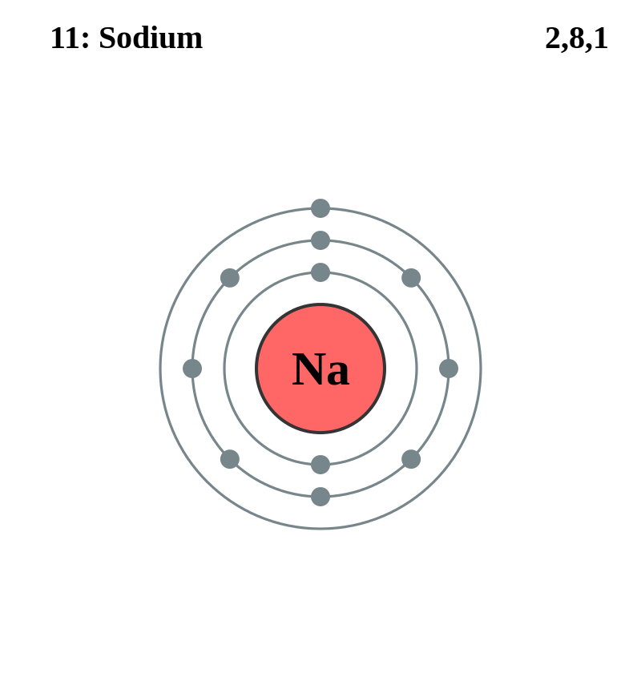

Basic Information about the element
Basic Information about the element
Name: Sodium
Symbol: Na
Atomic Number: 11

1s2 2s2 2p6 3s1
The chemical element sodium is classed as an alkali metal.
It was discovered in 1807 by Sir Humphry Davy.
| Number of Protons/Electrons: | 11 |
| Number of Neutrons: | 12 |
| Atomic Mass: | 22.98977 amu |
| Melting Point: | 97.72 °C (370.87 K, 207.9 °F) |
| Boiling Point: | 883 °C (1156 K, 1621 °F) |
| Classification: | Alkali Metal |
| Uses: | medicine, agriculture |